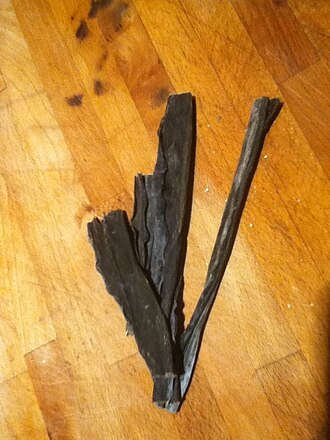

養殖昆布の生産量 都道府県ランキング
全7都道府県の順位と収獲量
養殖昆布の収獲量が全国で最も多いのは北海道で、2万429 tです。全国（2万4,554 t）の83%を占めます。

| 順位 | 都道府県 | 収獲量 | 全国に占める割合 |
|---|---|---|---|
| 1位 | 北海道 | 2万429 t | 83% |
| 2位 | 岩手県 | 3,556 t | 14% |
| 3位 | 神奈川県 | 40 t | 0.2% |
| 4位 | 長崎県 | 16 t | 0.1% |
| 5位 | 徳島県 | 11 t | 0.0% |
| 6位 | 秋田県 | 5 t | 0.0% |
| 7位 | 新潟県 | 3 t | 0.0% |
PR

養殖昆布の生産量の推移（令和2年〜令和6年）
全国の収獲量は、令和2年の3万304 tから令和6年の2万4,554 tへ、19%減りました。期間中、1位は一貫して北海道です。
| 年 | 全国 | 1位 | 2位 | 3位 |
|---|---|---|---|---|
| 令和6年 | 2万4,554 t | 北海道2万429 t | 岩手県3,556 t | 神奈川県40 t |
| 令和5年 | 2万5,741 t | 北海道2万716 t | 岩手県4,509 t | 神奈川県41 t |
| 令和4年 | 2万9,780 t | 北海道2万1,252 t | 岩手県7,667 t | 宮城県760 t |
| 令和3年 | 3万1,691 t | 北海道2万3,739 t | 岩手県6,937 t | 宮城県933 t |
| 令和2年 | 3万304 t | 北海道2万4,198 t | 岩手県5,179 t | 宮城県829 t |
この数字について
- 分類：海藻の仲間
- 全国の収獲量：2万4,554 t
- この数字が表すもの：収獲量（養殖による収獲量）
- 調査：海面漁業生産統計調査（海面養殖業） 令和6年
- この品目は養殖の統計です。
- 7県分を調査（調査していない県は順位に入りません）
養殖昆布の生産量について、よくある質問
- 養殖昆布の生産量が日本一の都道府県はどこですか？
- 北海道です。海面漁業生産統計調査（海面養殖業）（令和6年）で2万429 tでした。
- 養殖昆布の生産量ランキング2位・3位はどこですか？
- 2位は岩手県（3,556 t）、3位は神奈川県（40 t）です。
- 養殖昆布の生産量ランキング4位・5位はどこですか？
- 4位は長崎県（16 t）、5位は徳島県（11 t）です。養殖昆布の全7県の順位は上の表のとおりです。
- 養殖昆布の全国の生産量はどれくらいですか？
- 2万4,554 t（令和6年）です。